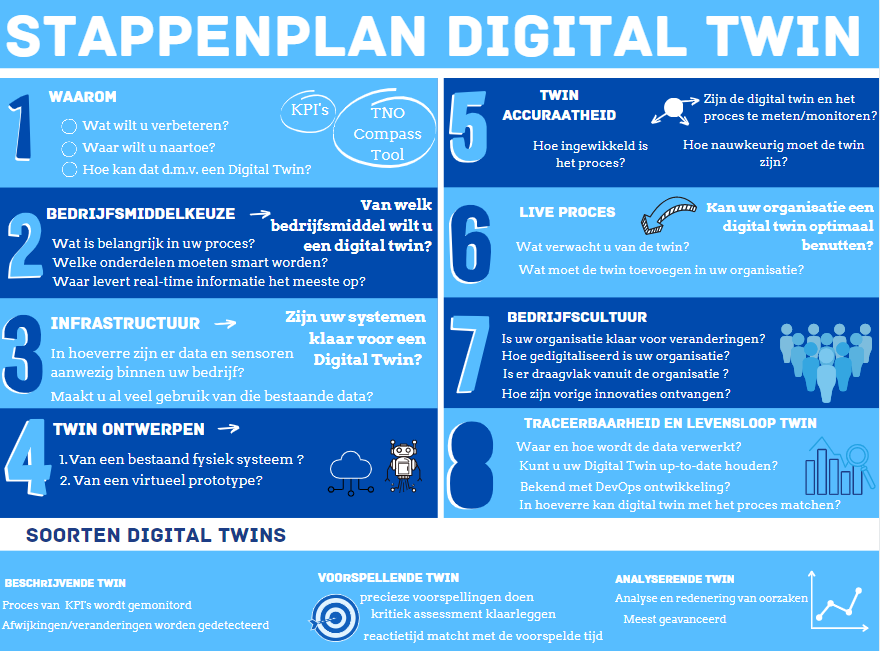

Op deze pagina zijn verschillende middelen te vinden die we voor het project in elkaar hebben gezet, zoals de presentatie, het stappenplan maar ook de demo voor MKB's over Digital Twins.
We hebben als eerste een stappenplan voor TNO in elkaar gezet, dit heeft als functie de MKB'ers laten nadenken over de readiness van hun organisatie voor een Digital Twin. Het stappenplan dat in de presentaties weergegeven wordt is een aangepaste versie zodat het makkelijker te presenteren is. 
De presentatie ontworpen voor TNO om te geven aan MKB's is hier te vinden.
Alle demonstrerende filmpjes die vanuit ons zijn gemaakt voor TNO, zijn in de eindpresentatie van het seminar te vinden
We zijn ook nog bezig met de eindresultaten van ons project bij elkaar te voegen, dit is nog niet volledig af en hier hadden we ook wat langer de tijd voor dan de website.